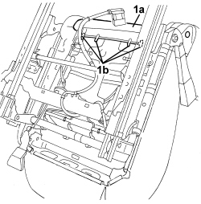
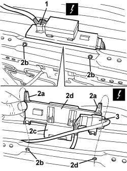
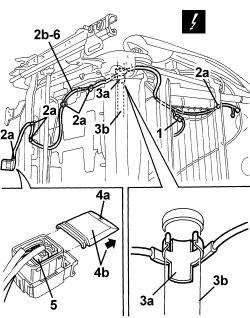
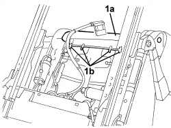
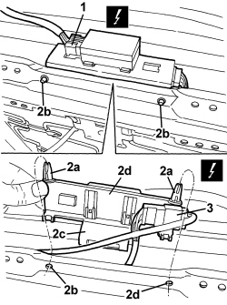
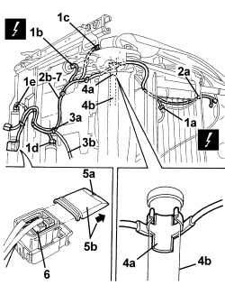

5580C86 SIDE BAG CABLE LOOM (ONE) LH OR RH - R.R OR REPLACE
- Path
- Procedures > 55 ELECTRICAL EQUIPMENT > 5580 SPECIAL ACCESSORIES > 5580C AIR BAG SYSTEM > 5580C86 SIDE BAG CABLE LOOM (ONE) LH OR RH - R.R OR REPLACE
- Kind
- repair procedure (removal / refitting; the operation number is the code)
- Applies to
- all engines; all production periods
- Interactive page
- https://sloeber94.github.io/elrnDB/alfa/159/en/#/939011099
Applies to: all engines; all production periods
 Removing
Removing
 Refitting
RefittingOp. 7045A10 FRONT SEAT (ONE), LEFT OR RIGHT - R.R.
Op. 7045A25 FRONT SEAT BACKREST LUMBAR ADJUSTMENT KNOB (ONE), LEFT OR RIGHT - R.R.
Op. 5580C44 FRONT SIDE BAG MODULE (ONE) LH OR RH - R.R
1. Release the rear part (1a) of the cushion trim from retainers (1b).

Applies to: all engines; all production periods
1. Disconnect the electrical connection for the seat heating control unit.
Description | Component |
|---|---|
PASSENGER FRONT SEAT HEATER CONTROL UNIT | |
DRIVER'S FRONT SEAT HEATER CONTROL UNIT |
2. Undo retainers (2a) from seats (2b); release retainer (2c) from the frame and move the electronic thermostat with mount (2d).
3. Disconnect the electrical connection for the cushion heater pad.
Description | Component |
|---|---|
LEFT SEAT HEATER | |
PASSENGER SEAT HEATER |

Applies to: all engines; all production periods
1. Disconnect the electrical connection.
Description | Component |
|---|---|
LEFT SEAT HEATER | |
PASSENGER SEAT HEATER |
2. Disconnec retainers (2a) securing airbag wiring harness (2b) to the seat structure.
3. Disconnect retainer (3a) from backrest rotation pipe (3b).
4. Undo retainer (4a) and remove connector cover (4b) in the arrowed direction.
5. Disconnect the electrical connection for the side bag.
6. Recover the side bag wiring harness.

Applies to: all engines; all production periods
Refitting
Removing- Check that the wiring is intact and there are no signs of damage.
- If new wiring is being fitted, position the labels as described below.
- Remove the detachable part of the adhesive label from the new wiring. Place a copy of the label in a special folder containing the vehicle details (model, registration date, chassis number) and the serial number of the old backrest cover. The file should be kept for future checks.
- Fit the detachable part of the original label on the lower part of the seat, where similar labels for the seat,Side Bag module and backrest cover can already be found.
- Place the wiring on the frame and secure it using the retaining bands.
- Connect the electrical connection for the side bag module.
- Place the connector cover in position and attach the retainers.
- Connect the retainer to the backrest rotation pipe.
- Connect the airbag module wiring harness retainers.
- Connect the electrical connections.
- Position the seat heating control unit and do up the retainers.
- Connect the electrical connection for the seat heating control unit.
- Connect the rear part of the cushion trim to the retainers.
Op. 5580C44 FRONT SIDE BAG MODULE (ONE) LH OR RH - R.R
Op. 7045A25 FRONT SEAT BACKREST LUMBAR ADJUSTMENT KNOB (ONE), LEFT OR RIGHT - R.R.
Op. 7045A10 FRONT SEAT (ONE), LEFT OR RIGHT - R.R.
- Use an Examiner to check that the system has not acquired errors during the operation.
Applies to: all engines; all production periods; only with equipment: Electric seats
Removing
RefittingOp. 7045A10 FRONT SEAT (ONE), LEFT OR RIGHT - R.R.
Op. 7045A25 FRONT SEAT BACKREST LUMBAR ADJUSTMENT KNOB (ONE), LEFT OR RIGHT - R.R.
Op. 5580C44 FRONT SIDE BAG MODULE (ONE) LH OR RH - R.R
1. Release the rear part (1a) of the cushion trim from retainers (1b).

Applies to: all engines; all production periods; only with equipment: Electric seats
1. Disconnect the electrical connection for the seat heating control unit.
Description | Component |
|---|---|
PASSENGER FRONT SEAT HEATER CONTROL UNIT | |
DRIVER'S FRONT SEAT HEATER CONTROL UNIT |
2. Undo retainers (2a) from seats (2b); release retainer (2c) from the frame and move the electronic thermostat with mount (2d).
3. Disconnect the electrical connection for the cushion heater pad.
Description | Component |
|---|---|
LEFT SEAT HEATER | |
PASSENGER SEAT HEATER |

Applies to: all engines; all production periods; only with equipment: Electric seats
1. Disconnect the electrical connections (1a, 1b, 1c, 1d, 1e).
Description | Component |
|---|---|
LEFT SEAT HEATER | |
PASSENGER SEAT HEATER | |
LEFT FRONT SEAT FRONT HEIGHT ADJUSTMENT MOTOR | |
RIGHT FRONT SEAT FRONT HEIGHT ADJUSTMENT MOTOR | |
DRIVER'S SEAT BACKREST ADJUSTMENT MOTOR | |
PASSENGER SEAT BACKREST ADJUSTMENT MOTOR | |
LEFT FRONT SEAT REAR HEIGHT ADJUSTMENT MOTOR | |
PASSENGER SIDE SEAT RAISING MOTOR | |
DRIVER'S SEAT SLIDING ADJUSTMENT MOTOR | |
PASSENGER SEAT SLIDING ADJUSTMENT MOTOR |
2. Disconnec retainers (2a) securing airbag wiring harness (2b) to the seat structure.
3. Disconnect retainer (3a) connecting airbag wiring harness (2b) to seat belt anchorage link wiring harness (3b).
4. Disconnect retainer (4a) from backrest rotation pipe (4b).
5. Undo retainer (5a) and remove connector cover (5b) in the arrowed direction.
6. Disconnect the electrical connection for the side bag.
7. Recover the side bag wiring harness.

Applies to: all engines; all production periods; only with equipment: Electric seats
Refitting
Removing- Check that the wiring is intact and there are no signs of damage.
- If new wiring is being fitted, position the labels as described below.
- Remove the detachable part of the adhesive label from the new wiring. Place a copy of the label in a special folder containing the vehicle details (model, registration date, chassis number) and the serial number of the old backrest cover. The file should be kept for future checks.
- Fit the detachable part of the original label on the lower part of the seat, where similar labels for the seat,Side Bag module and backrest cover can already be found.
- Place the wiring on the frame and secure it using the retaining bands.
- Connect the electrical connection for the side bag module.
- Place the connector cover in position and attach the retainers.
- Connect the retainer to the backrest rotation pipe.
- Connect the airbag wiring harness to the seat belt anchorage link wiring harness using the retainers.
- Connect the airbag module wiring harness retainers to the seat structure.
- Connect the electrical connections.
- Position the seat heating control unit and do up the retainers.
- Connect the electrical connection for the seat heating control unit.
- Connect the rear part of the cushion trim to the retainers.
Op. 5580C44 FRONT SIDE BAG MODULE (ONE) LH OR RH - R.R
Op. 7045A25 FRONT SEAT BACKREST LUMBAR ADJUSTMENT KNOB (ONE), LEFT OR RIGHT - R.R.
Op. 7045A10 FRONT SEAT (ONE), LEFT OR RIGHT - R.R.
- Use an Examiner to check that the system has not acquired errors during the operation.
Topics linked from this page (16)
- 5580C AIR BAG SYSTEM
- 5580C44 FRONT SIDE BAG MODULE (ONE) LH OR RH - R.R
- 7045A10 FRONT SEAT (ONE), LEFT OR RIGHT - R.R.
- 7045A25 FRONT SEAT BACKREST LUMBAR ADJUSTMENT KNOB (ONE), LEFT OR RIGHT - R.R.
- M110 FRONT PASSENGER SEAT HEATER CONTROL UNIT
- M170 DRIVER'S FRONT SEAT HEATER CONTROL UNIT
- N125 LEFT FRONT SEAT REAR HEIGHT ADJUSTMENT MOTOR
- N126 LEFT FRONT SEAT FRONT HEIGHT ADJUSTMENT MOTOR
- N127 DRIVER'S SEAT SLIDING ADJUSTMENT MOTOR
- N128 PASSENGER SEAT LIFT MOTOR
- N129 RIGHT FRONT SEAT FRONT HEIGHT ADJUSTMENT MOTOR
- N130 PASSENGER SIDE SEAT SLIDE ADJUSTMENT MOTOR
- N132 DRIVER'S SEAT BACKREST ADJUSTMENT MOTOR
- N135 PASSENGER SEAT BACKREST ADJUSTMENT MOTOR
- O040 LEFT SEAT HEATER
- O041 PASSENGER SEAT HEATER